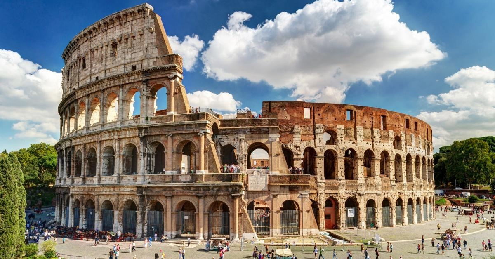
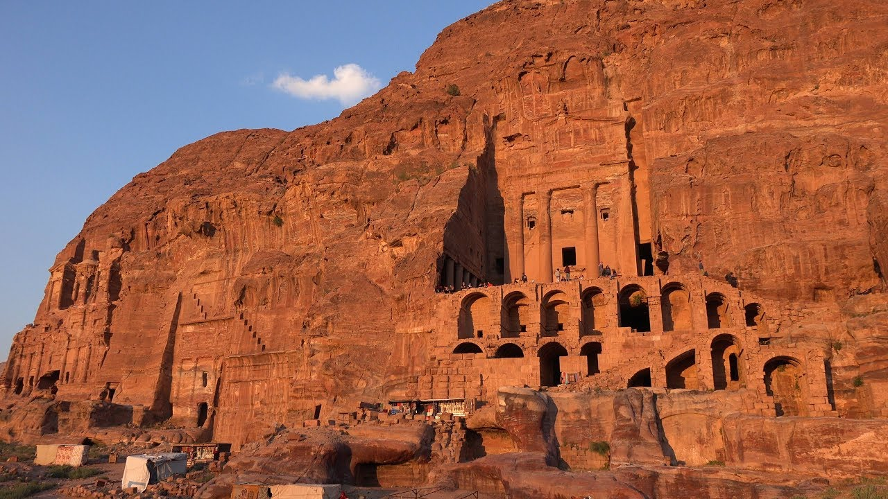

Seven Wonders of the World

The Taj Mahal is an ivory-white marble mausoleum on the south bank of the Yamuna river in the Indian city of Agra. It was commissioned in 1632 by the Mughal emperor, Shah Jahan (reigned from 1628 to 1658), to house the tomb of his favourite wife, Mumtaz Mahal. It also houses the tomb of Shah Jahan, the builder. The tomb is the centerpiece of a 17-hectare (42-acre) complex, which includes a mosque and a guest house, and is set in formal gardens bounded on three sides by a crenellated wall.
Construction of the mausoleum was essentially completed in 1643 but work continued on other phases of the project for another 10 years. The Taj Mahal complex is believed to have been completed in its entirety in 1653 at a cost estimated at the time to be around 32 million rupees, which in 2015 would be approximately 52.8 billion rupees (U.S. $827 million). The construction project employed some 20,000 artisans under the guidance of a board of architects led by the court architect to the emperor, Ustad Ahmad Lahauri.
The Taj Mahal was designated as a UNESCO World Heritage Site in 1983 for being "the jewel of Muslim art in India and one of the universally admired masterpieces of the world's heritage". It is regarded by many as the best example of Mughal architecture and a symbol of India's rich history. The Taj Mahal attracts 7–8 million visitors a year and in 2007, it was declared a winner of the New7Wonders of the World (2000–2007) initiative.
Christ the Redeemer is an Art Deco statue of Jesus Christ in Rio de Janeiro, Brazil, created by French sculptor Paul Landowski and built by Brazilian engineer Heitor da Silva Costa, in collaboration with French engineer Albert Caquot. Romanian sculptor Gheorghe Leonida fashioned the face. Constructed between 1922 and 1931, the statue is 30 metres (98 ft) high, excluding its 8-metre (26 ft) pedestal. The arms stretch 28 metres (92 ft) wide.
The statue weighs 635 metric tons (625 long, 700 short tons), and is located at the peak of the 700-metre (2,300 ft) Corcovado mountain in the Tijuca Forest National Park overlooking the city of Rio de Janeiro. A symbol of Christianity across the world, the statue has also become a cultural icon of both Rio de Janeiro and Brazil, and is listed as one of the New7Wonders of the World. It is made of reinforced concrete and soapstone.


The Colosseum or Coliseum , is an oval amphitheatre in the centre of the city of Rome, Italy. Built of travertine, tuff, and brick-faced concrete, it is the largest amphitheatre ever built. The Colosseum is situated just east of the Roman Forum. Construction began under the emperor Vespasian in AD 72, and was completed in AD 80 under his successor and heir Titus. Further modifications were made during the reign of Domitian (81–96). These three emperors are known as the Flavian dynasty, and the amphitheatre was named in Latin for its association with their family name (Flavius).
The Colosseum could hold, it is estimated, between 50,000 and 80,000 spectators, having an average audience of some 65,000; it was used for gladiatorial contests and public spectacles such as mock sea battles (for only a short time as the hypogeum was soon filled in with mechanisms to support the other activities), animal hunts, executions, re-enactments of famous battles, and dramas based on Classical mythology. The building ceased to be used for entertainment in the early medieval era. It was later reused for such purposes as housing, workshops, quarters for a religious order, a fortress, a quarry, and a Christian shrine.
The Great Wall of China is a series of fortifications made of stone, brick, tamped earth, wood, and other materials, generally built along an east-to-west line across the historical northern borders of China to protect the Chinese states and empires against the raids and invasions of the various nomadic groups of the Eurasian Steppe with an eye to expansion. Several walls were being built from as early as the 7th century BC; these were later joined together and made bigger by Qin Shi Huang (220–206 BC), the first Emperor of China. Little of that wall remains. Later on, many successive dynasties have repaired, maintained, and newly built multiple stretches of border walls. The most well-known of the walls were built during the Ming Dynasty (1368–1644).
Apart from defense, other purposes of the Great Wall have included border controls, allowing the imposition of duties on goods transported along the Silk Road, regulation or encouragement of trade and the control of immigration and emigration. Furthermore, the defensive characteristics of the Great Wall were enhanced by the construction of watch towers, troop barracks, garrison stations, signaling capabilities through the means of smoke or fire, and the fact that the path of the Great Wall also served as a transportation corridor.
Chichen Itza was a large pre-Columbian city built by the Maya people of the Terminal Classic period. The archaeological site is located in Tinúm Municipality, Yucatán State, Mexico.
Chichen Itza was a major focal point in the Northern Maya Lowlands from the Late Classic (c. AD 600–900) through the Terminal Classic (c. AD 800–900) and into the early portion of the Postclassic period (c. AD 900–1200). The site exhibits a multitude of architectural styles, reminiscent of styles seen in central Mexico and of the Puuc and Chenes styles of the Northern Maya lowlands. The presence of central Mexican styles was once thought to have been representative of direct migration or even conquest from central Mexico, but most contemporary interpretations view the presence of these non-Maya styles more as the result of cultural diffusion.
Chichen Itza was one of the largest Maya cities and it was likely to have been one of the mythical great cities, or Tollans, referred to in later Mesoamerican literature. The city may have had the most diverse population in the Maya world, a factor that could have contributed to the variety of architectural styles at the site.
The ruins of Chichen Itza are federal property, and the site's stewardship is maintained by Mexico's Instituto Nacional de Antropología e Historia (National Institute of Anthropology and History). The land under the monuments had been privately owned until 29 March 2010, when it was purchased by the state of Yucatán.
Chichen Itza is one of the most visited archaeological sites in Mexico with over 2.6 million tourists in 2017.
Machu Picchu is a 15th-century Inca citadel, located in the Eastern Cordillera of southern Peru, on a mountain ridge 2,430 metres (7,970 ft) above sea level. It is located in the Cusco Region, Urubamba Province, Machupicchu District in Peru, above the Sacred Valley, which is 80 kilometres (50 mi) northwest of Cuzco and through which the Urubamba River flows, which cuts through the Cordillera and originates a canyon with a tropical mountain climate.
Most archaeologists believe that Machu Picchu was constructed as an estate for the Inca emperor Pachacuti (1438–1472). Often mistakenly referred to as the "Lost City of the Incas" (a title more accurately applied to Vilcabamba), it is the most familiar icon of Inca civilization. The Incas built the estate around 1450 but abandoned it a century later at the time of the Spanish Conquest. Although known locally, it was not known to the Spanish during the colonial period and remained unknown to the outside world until American historian Hiram Bingham brought it to international attention in 1911.
Machu Picchu was built in the classical Inca style, with polished dry-stone walls. Its three primary structures are the Intihuatana, the Temple of the Sun, and the Room of the Three Windows. Most of the outlying buildings have been reconstructed in order to give tourists a better idea of how they originally appeared. By 1976, thirty percent of Machu Picchu had been restored and restoration continues.

Petra , originally known to its inhabitants as Raqmu, is a historical and archaeological city in southern Jordan. Petra lies on the slope of Jabal Al-Madbah in a basin among the mountains which form the eastern flank of Arabah valley that run from the Dead Sea to the Gulf of Aqaba. Petra is believed to have been settled as early as 9,000 BC, and it was possibly established in the 4th century BC as the capital city of the Nabataean Kingdom. The Nabataeans were nomadic Arabs who invested in Petra's proximity to the trade routes by establishing it as a major regional trading hub.
The trading business gained the Nabataeans considerable revenue and Petra became the focus of their wealth. The earliest historical reference to Petra was an attack to the city ordered by Antigonus I in 312 BC recorded by various Greek historians. The Nabataeans were, unlike their enemies, accustomed to living in the barren deserts, and were able to repel attacks by utilizing the area's mountainous terrain. They were particularly skillful in harvesting rainwater, agriculture and stone carving. Petra flourished in the 1st century AD when its famous Khazneh structure – believed to be the mausoleum of Nabataean King Aretas IV – was constructed, and its population peaked at an estimated 20,000 inhabitants.